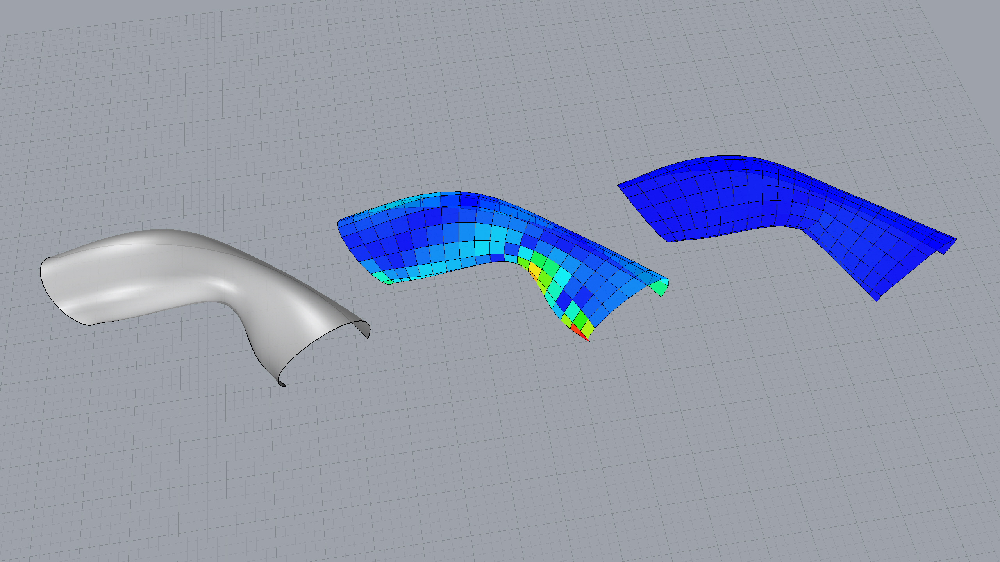

Mesh planarisation

Downloads
from __future__ import print_function
from __future__ import division
from System.Drawing.Color import FromArgb
from copy import deepcopy
import compas_rhino
from compas_rhino.conduits import FacesConduit
from compas_rhino.geometry import RhinoSurface
from compas.utilities import i_to_rgb
from compas.datastructures import Mesh
from compas.geometry import planarize_faces
from compas.geometry import flatness
__author__ = ['Tom Van Mele', ]
__copyright__ = 'Copyright 2016 - Block Research Group, ETH Zurich'
__license__ = 'MIT License'
__email__ = 'vanmelet@ethz.ch'
# select an input surface and convert it to a mesh
guid = compas_rhino.select_surface('Select an input surface.')
mesh = compas_rhino.mesh_from_surface_heightfield(Mesh, guid, density=(20, 10))
# create a surface constraint
surf = RhinoSurface(guid)
# vertices and faces
key_index = mesh.key_index()
vertices_0 = mesh.get_vertices_attributes('xyz')
vertices_1 = deepcopy(vertices_0)
faces = [[key_index[key] for key in mesh.face_vertices(fkey)] for fkey in mesh.faces()]
fixed = [key_index[key] for key in mesh.vertices_where({'z': (-0.5, 0.1)})]
# planarize with a conduit for visualization
conduit = FacesConduit(vertices_1, faces, refreshrate=5)
# define a callback to visualise the planarisation process
def callback(k, args):
for index in range(len(vertices_1)):
if index in fixed:
vertices_1[index][2] = 0
if k % 5 == 0:
dev = flatness(vertices_1, faces, 0.02)
conduit.colors = [FromArgb(* i_to_rgb(dev[i])) for i in range(len(faces))]
conduit.redraw()
with conduit.enabled():
planarize_faces(
vertices_1,
faces,
kmax=500,
callback=callback)
# compute the *flatness*
dev0 = flatness(vertices_0, faces, 0.02)
dev1 = flatness(vertices_1, faces, 0.02)
# draw the original
compas_rhino.mesh_draw_faces(
mesh,
layer='mesh_start',
clear_layer=True,
color={fkey: i_to_rgb(dev0[index]) for index, fkey in enumerate(mesh.faces())}
)
# draw the result
for key, attr in mesh.vertices(True):
index = key_index[key]
attr['x'] = vertices_1[index][0]
attr['y'] = vertices_1[index][1]
attr['z'] = vertices_1[index][2]
color = {fkey: i_to_rgb(dev1[index]) for index, fkey in enumerate(mesh.faces())}
compas_rhino.mesh_draw_faces(
mesh,
layer='mesh_end',
clear_layer=True,
color=color
)